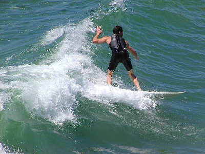

Welcome to Jersey Buoys

Come enjoy the excitement of riding the waves along the Jersey Shore with Jersey Buoys.
Our nationally-accredited school brings its 22 years of experience in helping you become
the surfer you've dreamed of becoming.
Our classes are tailored to your needs. We provide instruction in basic surfing techniques and advanced techniques from cutbacks to boosts to hobble-bobbles. Choose a private or group lesson. Grommets can participate in 1, 3, or 5 half-day courses. We also sponsor surfing camps with catered meals and lodging.
Whether a Barney or a Gandolf, you are always safe in our waters. Our experienced instructors are accredited by the National Instructors and Surf Schools Association. They are fully Red Cross and First Aid certified. In addition to being great teachers, every instructor has gone through extensive lifeguard training.
The next big wave is approaching: Catch it with Jersey Buoys. Call to set up an appointment, grab a board from the quiver and head to the Green Room.